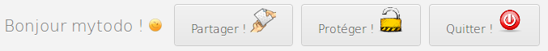

Accueil du site
Liste des tâches
Formulaire d'ajout
Blocs de fonctionalités
Barre de gestion du profil
Filtres de la liste
Calendrier
Voici la page de connexion du site, celle-ci a plusieurs objectifs :
* Présenter le site, donner envie à l'utilisateur de l'utiliser.
* Etablir aussitôt une charte graphique sobre et attirante.
* Permettre l'enregistrement des nouveaux utilisateurs
* Simplifier cette étape contrariante au maximum
* Permettre la connexion des utilisateurs déjà connus
* Donner un aperçu immédiat de l'efficacité du site et de sa réactivité.
Cette vue est la partie la plus importante du site, elle permet en effet de visualiser ce qui intéresse l'utilisateur :
la liste de tout ce qu'il doit faire dans les prochains jours.
* Afficher, de manière efficace, toutes les informations rentrées par l'utilisateur.
* Visualiser d'un seul coup d'oeil les tâches les plus importantes.
* Ordonner et supprimer les tâches en fonction des besoins.
Cette partie du site est la plus modulable. Nous avons beaucoup travaillé dessus afin qu'elle s'adapte
au choix de l'utilisateur et à son niveau. Il s'agit tout de même du bloc que les membres utiliseront le plus.
* Ajouter une tâche le plus facilement possible.
* Personnaliser ses rappels avec des catégories, une date et des priorités.
* Le formulaire est résistant aux injections SQL grâce à l'utilisation de requêtes précompilées.
Enfin il est possible de créer une tâche complexe, sans utiliser la souris, à l'aide de quelques commandes clés.
* Partager sa liste avec ses connaissances
* Protéger son compte avec un mot de passe
* Se déconnecter
Le module de filtrage ne parait pas essentiel au début,
pourtant il devient vite très intéressant quand l'utilisateur possède une liste de plus de 20 tâches.
* Trier les tâches selon n'importe quel critère.
* Pouvoir combiner plusieurs critères pour trier encore plus finement.
La lisibilité de l'ensemble ne doit pas être gêné par ces filtres, l'utilisateur doit pouvoir à tout
moment retrouver la liste complète de ses tâches. C'est ce que permet le bouton reset.
Les dates sont toujours des informations difficiles à rentrer.
Sur la plupart des formulaire, il faut respecter une syntaxe précise.
Sur mytodo.fr, nous pensons que s'est au site de s'adapter aux habitudes de l'utilisateur.
C'est pour cela que nous acceptons différents types de saisie,
et c'est pour cette raison que nous avons mis en place la vue calendrier.
* Offrir un calendrier facile à utiliser, et en français, pour planifier facilement son emploi du temps.
* Afficher toutes les tâches en fonction de leur date d'échéance.
* Utiliser le calendrier pour modifier ces dates sur les tâches présentes dans la liste.